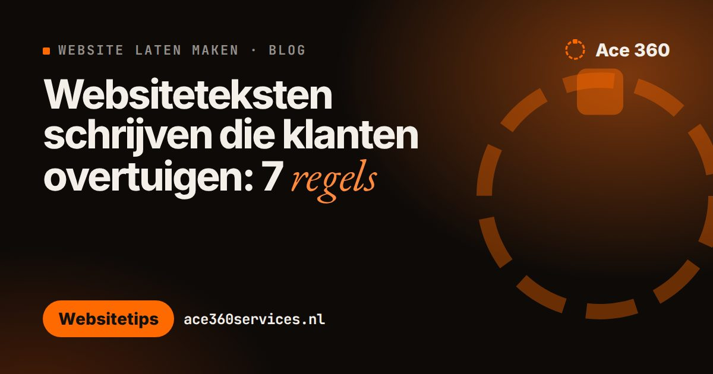
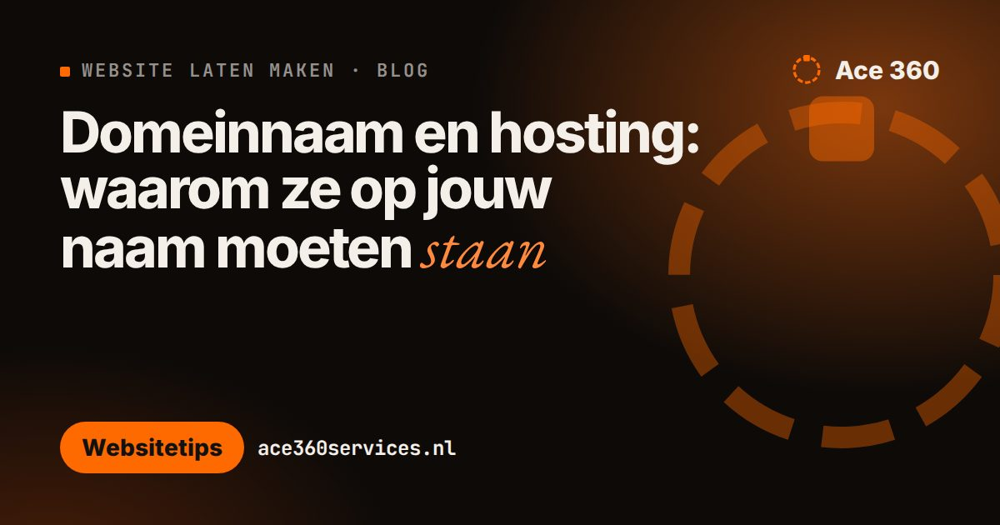
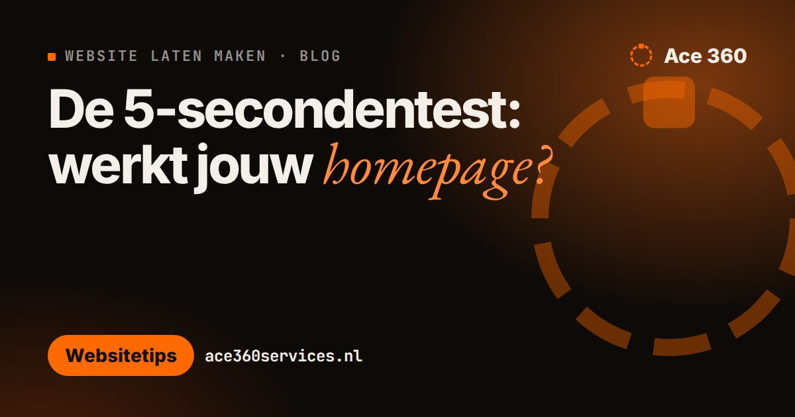
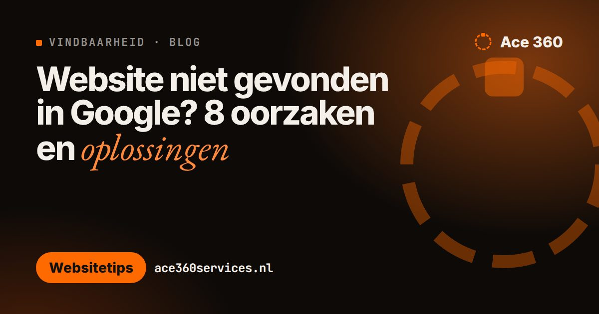
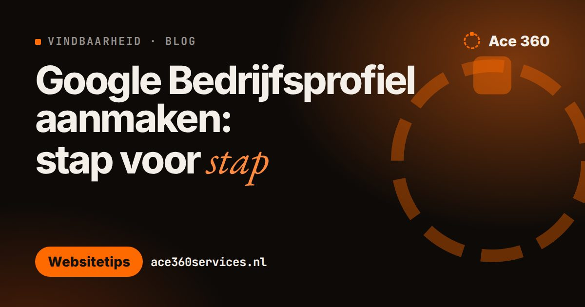
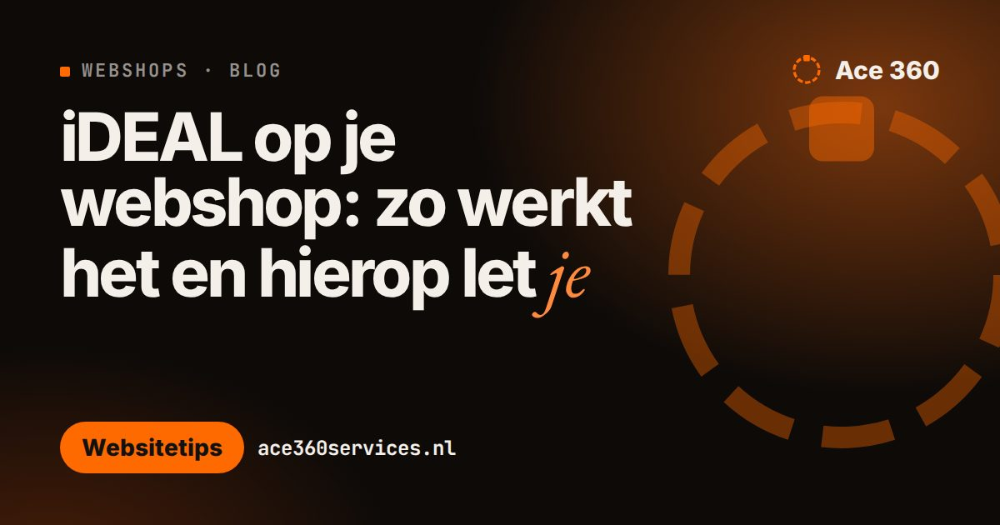
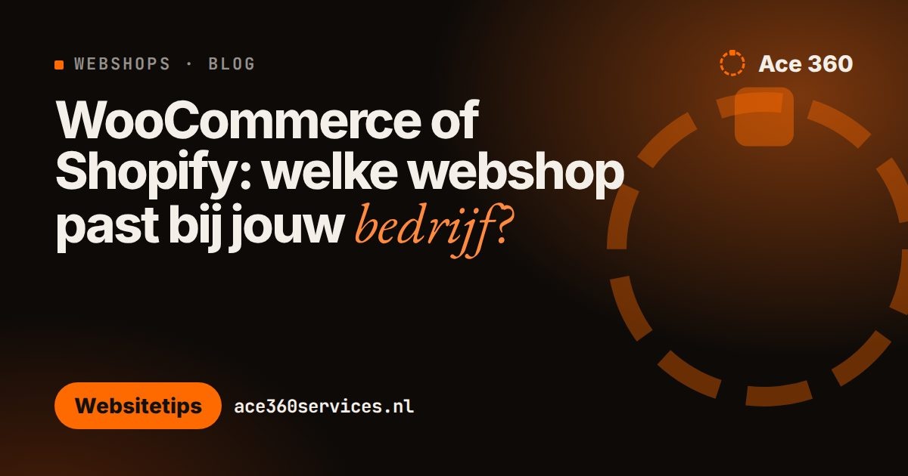

Blog
Website tips you can useWebsitetips die je meteen kunt gebruiken
Short, practical articles about websites, online stores, booking and being found on Google. In WordPress, Dutch posts are at /blog/ and English posts at /en/blog/.Korte, praktische artikelen over websites, webshops, online boeken en gevonden worden in Google. In WordPress staan Nederlandse artikelen op /blog/ en Engelse op /en/blog/.
 Booking on your own website or via an app: which is best?Booking platforms bring visibility but often take a commission; booking on your own website keeps the client relationship and costs. A practical comparison for salons, practices and studios.
Booking on your own website or via an app: which is best?Booking platforms bring visibility but often take a commission; booking on your own website keeps the client relationship and costs. A practical comparison for salons, practices and studios. Google Business Profile in the Netherlands: step by stepA free Google Business Profile puts your business in Google Maps and local results. How to create and verify it, hide your home address if you work from home, and fill it in for Dutch and English-speaking customers.
Google Business Profile in the Netherlands: step by stepA free Google Business Profile puts your business in Google Maps and local results. How to create and verify it, hide your home address if you work from home, and fill it in for Dutch and English-speaking customers. Hiring a web designer in the Netherlands: 7 questions to askLooking for an English-speaking web designer in the Netherlands? Seven questions that show you who you are dealing with, from the total price and ownership of your domain to Dutch-specific needs like iDEAL and KvK details.
Hiring a web designer in the Netherlands: 7 questions to askLooking for an English-speaking web designer in the Netherlands? Seven questions that show you who you are dealing with, from the total price and ownership of your domain to Dutch-specific needs like iDEAL and KvK details. iDEAL explained: taking payments from Dutch customersiDEAL is how Dutch customers expect to pay online. What it is, how to add it to WooCommerce or Shopify, what the move to Wero means, and the checkout mistakes that cost international stores Dutch orders.
iDEAL explained: taking payments from Dutch customersiDEAL is how Dutch customers expect to pay online. What it is, how to add it to WooCommerce or Shopify, what the move to Wero means, and the checkout mistakes that cost international stores Dutch orders. Dutch, English or both? Choosing your website languageMost Dutch people speak English, so is a Dutch website really necessary? How to decide based on who your customers are and what they search for, and how to set up two languages properly.
Dutch, English or both? Choosing your website languageMost Dutch people speak English, so is a Dutch website really necessary? How to decide based on who your customers are and what they search for, and how to set up two languages properly. New business in the Netherlands? Your website checklistRegistered with the KvK and ready to launch? What your website needs in the Netherlands: the legal details, iDEAL, Dutch or English, a .nl domain, and how Dutch customers will find you.
New business in the Netherlands? Your website checklistRegistered with the KvK and ready to launch? What your website needs in the Netherlands: the legal details, iDEAL, Dutch or English, a .nl domain, and how Dutch customers will find you. Wat moet er wettelijk op je website? KvK, privacy en cookiesEen overzicht van wat er volgens de Nederlandse regels op een zakelijke website moet staan: bedrijfsgegevens, privacyverklaring, cookies, en voor webshops ook prijzen, voorwaarden en herroepingsrecht.
Wat moet er wettelijk op je website? KvK, privacy en cookiesEen overzicht van wat er volgens de Nederlandse regels op een zakelijke website moet staan: bedrijfsgegevens, privacyverklaring, cookies, en voor webshops ook prijzen, voorwaarden en herroepingsrecht. Hoe snel moet je website zijn? Laadtijd meten en verbeterenEen trage website kost bezoekers en telt mee in Google. Hoe je snelheid meet met PageSpeed Insights, wat de Core Web Vitals betekenen en zes veelvoorkomende oorzaken van traagheid.
Hoe snel moet je website zijn? Laadtijd meten en verbeterenEen trage website kost bezoekers en telt mee in Google. Hoe je snelheid meet met PageSpeed Insights, wat de Core Web Vitals betekenen en zes veelvoorkomende oorzaken van traagheid. Website voor zzp’ers: wat moet erop staan?Als zzp’er heb je geen grote website nodig, wel een duidelijke. Wat er minimaal op moet, wat je beter weglaat, wat het kost en hoe je ervoor zorgt dat opdrachtgevers je vinden en bellen.
Website voor zzp’ers: wat moet erop staan?Als zzp’er heb je geen grote website nodig, wel een duidelijke. Wat er minimaal op moet, wat je beter weglaat, wat het kost en hoe je ervoor zorgt dat opdrachtgevers je vinden en bellen.
Websiteteksten schrijven die klanten overtuigen: 7 regelsDe meeste websites praten over het bedrijf, niet over de klant. Zeven regels om teksten te schrijven die bezoekers snappen, herkennen en laten bellen, met voor-en-na-voorbeelden.
Domeinnaam en hosting: waarom ze op jouw naam moeten staanStaat je domeinnaam op naam van je webbouwer, dan kun je niet zomaar overstappen. Hoe je controleert van wie je domein is, wat je moet hebben en hoe je het overzet. WordPress onderhoud: checklist per week, maand en jaarEen WordPress-site moet bijgehouden worden om veilig en snel te blijven. Deze checklist laat zien wat er wekelijks, maandelijks en jaarlijks moet gebeuren, en hoe je updates veilig installeert.
WordPress onderhoud: checklist per week, maand en jaarEen WordPress-site moet bijgehouden worden om veilig en snel te blijven. Deze checklist laat zien wat er wekelijks, maandelijks en jaarlijks moet gebeuren, en hoe je updates veilig installeert. Boekingssysteem kiezen voor je salon: 7 aandachtspuntenEen online boekingssysteem scheelt telefoontjes tijdens het werk en gemiste afspraken. Zeven punten om te vergelijken voordat je kiest, van commissie per boeking tot herinneringen en aanbetalingen.
Boekingssysteem kiezen voor je salon: 7 aandachtspuntenEen online boekingssysteem scheelt telefoontjes tijdens het werk en gemiste afspraken. Zeven punten om te vergelijken voordat je kiest, van commissie per boeking tot herinneringen en aanbetalingen.
De 5-secondentest: werkt jouw homepage?Een bezoeker beslist snel of hij blijft. Met de 5-secondentest check je of je homepage drie vragen beantwoordt: wat doe je, voor wie, en wat moet ik nu doen? Met voorbeelden en oplossingen.
Website niet gevonden in Google? 8 oorzaken en oplossingenJe hebt een website, maar Google laat je concurrenten zien. Acht veelvoorkomende oorzaken, van een vinkje in WordPress tot pagina’s die over alles en niets gaan, met wat je er per oorzaak aan doet.
Google Bedrijfsprofiel aanmaken: stap voor stapEen Google Bedrijfsprofiel is gratis en zet je bedrijf in Google Maps en in de lokale zoekresultaten. Zo maak je het aan, verifieer je het en vul je het zo in dat klanten je kiezen.
iDEAL op je webshop: zo werkt het en hierop let jeZonder iDEAL laat een Nederlandse webshop klanten liggen. Hoe je iDEAL toevoegt, wat een betaalprovider doet, wat het ongeveer kost en welke fouten je in de afrekenstap voorkomt.
WooCommerce of Shopify: welke webshop past bij jouw bedrijf?WooCommerce en Shopify zijn de twee meest gekozen opties voor een Nederlandse webshop. Een eerlijke vergelijking: kosten, beheer, betalen met iDEAL en wanneer je welke kiest. One page website of meerdere pagina’s: wat past bij jou?Een one page website is snel en betaalbaar, een website met meerdere pagina’s wordt beter gevonden op verschillende diensten. Zo kies je wat bij jouw bedrijf past.
One page website of meerdere pagina’s: wat past bij jou?Een one page website is snel en betaalbaar, een website met meerdere pagina’s wordt beter gevonden op verschillende diensten. Zo kies je wat bij jouw bedrijf past. Website laten maken? Stel deze 6 vragen voordat je betaaltDe meeste problemen met een nieuwe website ontstaan vóór de bouw: een vage offerte, een ontwerp dat je pas aan het eind ziet, of inloggegevens die je nooit krijgt. Deze zes vragen voorkomen dat.
Website laten maken? Stel deze 6 vragen voordat je betaaltDe meeste problemen met een nieuwe website ontstaan vóór de bouw: een vage offerte, een ontwerp dat je pas aan het eind ziet, of inloggegevens die je nooit krijgt. Deze zes vragen voorkomen dat.